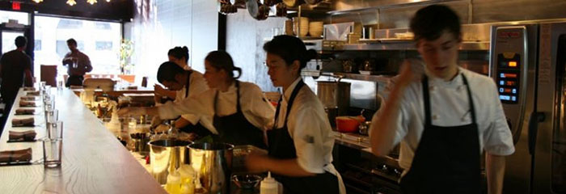

UME Oakland
Bringing creative asian fusion food to Uptown!

Ume serves creative dishes grounded in northern californian ingredients, and inspired by the japanese pantry. The menu, created by daniel patterson of coi, features simple, clean, bright dishes that feature the best of the season.
Tonight's Menu
Starters
- Asparagus soup with torn croutons, truffled creme fraiche 6
- Sunchoke brandade cake, avocado carpaccio, spring greens 8
- Local dairy cheese plate, ask server 6
Entrees
- Day boat Maine scallops, artichoke barigoule, bacon, lemon 12
- Fricasee of wild mushroom, fava bean, new potato, herb salad 18
- Duroc pork tenderloin,tokyo turnip, spring peas 24
- Pan roasted duck breast, beet salad, cress, ginger mint dressing 28
Desserts
- Keffir lime and ginger panna cotta, spring berries 8
- Lemon Ricotta Fritters with caramel 8
Click here to look at our wine list!
2214 BROADWAY
OAKLAND, CALIFORNIA
510.444.7586
info@umeoakland.com
Click for Directions!